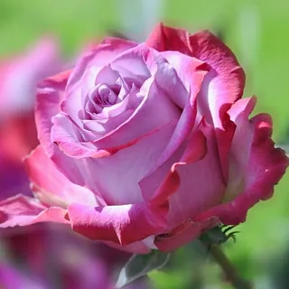

- 2.Botany:-
The leaves are borne alternately on the stem. In most species they are 5 to 15 centimetres (2.0 to 5.9 in) long, pinnate, with (3–) 5–9 (–13) leaflets and basal stipules; the leaflets usually have a serrated margin, and often a few small prickles on the underside of the stem. Most roses are deciduous but a few (particularly from Southeast Asia) are evergreen or nearly so.The flowers of most species have five petals, with the exception of Rosa sericea, which usually has only four. Each petal is divided into two distinct lobes and is usually white or pink, though in a few species yellow or red. Beneath the petals are five sepals (or in the case of some Rosa sericea, four). These may be long enough to be visible when viewed from above and appear as green points alternating with the rounded petals. There are multiple superior ovaries that develop into achenes.Roses are insect-pollinated in nature.The aggregate fruit of the rose is a berry-like structure called a rose hip. Many of the domestic cultivars do not produce hips, as the flowers are so tightly petalled that they do not provide access for pollination. The hips of most species are red, but a few (e.g. Rosa pimpinellifolia) have dark purple to black hips. Each hip comprises an outer fleshy layer, the hypanthium,which contains 5–160 "seeds" (technically dry single-seeded fruits called achenes) embedded in a matrix of fine, but stiff, hairs. Rose hips of some species, especially the dog rose (Rosa canina) and rugosa rose (Rosa rugosa), are very rich in vitamin C, among the richest sources of any plant. The hips are eaten by fruit-eating birds such as thrushes and waxwings, which then disperse the seeds in their droppings. Some birds, particularly finches, also eat the seeds.
There are a two type of Botany:-
- Evolution
- Species
|
-
3.Use of Rose:-
Roses are best known as ornamental plants grown for their flowers in the garden and sometimes indoors. They have been also used for commercial perfumery and commercial cut flower crops. Some are used as landscape plants, for hedging and for other utilitarian purposes such as game cover and slope stabilization.
There are a many different type of uses of rose:-
- Ornamental plants
- Cut flowers
- Perfume
- Food and drink
- As a food ingredient
- Art and symbolism
- Pests and diseases
- See also
- References
- External links
- A.Ornamental plants:-
The majority of ornamental roses are hybrids that were bred for their flowers. A few, mostly species roses are grown for attractive or scented foliage (such as Rosa glauca and Rosa rubiginosa), ornamental thorns (such as Rosa sericea) or for their showy fruit (such as Rosa moyesii).Ornamental roses have been cultivated for millennia, with the earliest known cultivation known to date from at least 500 BC in Mediterranean countries, Persia, and China.It is estimated that 30 to 35 thousand rose hybrids and cultivars have been bred and selected for garden use as flowering plants.Most are double-flowered with many or all of the stamens having morphed into additional petals.
|
- B.Cut flowers:-
Roses are a popular crop for both domestic and commercial cut flowers. Generally they are harvested and cut when in bud, and held in refrigerated conditions until ready for display at their point of sale.In temperate climates, cut roses are often grown in greenhouses, and in warmer countries they may also be grown under cover in order to ensure that the flowers are not damaged by weather and that pest and disease control can be carried out effectively. Significant quantities are grown in some tropical countries.
- C.Perfume:-
Roses are a popular crop for both domestic and commercial cut flowers. Generally they are harvested and cut when in bud, and held in refrigerated conditions until ready for display at their point of sale.In temperate climates, cut roses are often grown in greenhouses, and in warmer countries they may also be grown under cover in order to ensure that the flowers are not damaged by weather and that pest and disease control can be carried out effectively.
- D.Food and drink:-
Rose hips are high in vitamin C, are edible raw,and occasionally made into jam, jelly, marmalade, and soup, or are brewed for tea. They are also pressed and filtered to make rose hip syrup. Rose hips are also used to produce rose hip seed oil, which is used in skin products and some makeup products.Gulab jamun made with rose waterRose water has a very distinctive flavour and is used in Middle Eastern, Persian, and South Asian cuisine—especially in sweets such as Turkish delight,barfi, baklava, halva, gulab jamun, knafeh, and nougat.
|
 |
- E.As a food ingredient:-
The rose hip, usually from R.canina, is used as a minor source of vitamin C.Diarrhodon (Gr διάρροδον, "compound of roses", from ῥόδων, "of roses") is a name given to various compounds in which red roses are an ingredient.
- F.Art and symbolism:-
The long cultural history of the rose has led to it being used often as a symbol. In ancient Greece, the rose was closely associated with the goddess Aphrodite.In the Iliad, Aphrodite protects the body of Hector using the "immortal oil of the rose" and the archaic Greek lyric poet Ibycus praises a beautiful youth saying that Aphrodite nursed him "among rose blossoms".The second-century AD Greek travel writer Pausanias associates the rose with the story of Adonis and states that the rose is red because Aphrodite wounded herself on one of its thorns and stained the flower red with her blood.Book Eleven of ent Roman novel The Golden Ass by Apuleius contains a scene in which the goddess Isis, who is identified with Venus, instructs the main character, Lucius, who has been transformed into a donkey, to eat rose petals from a crown of roses worn by a priest as part of a religious procession in order to regain his humanity.Following the Christianization of the Roman Empire, the rose became identified with the Virgin Mary.
|